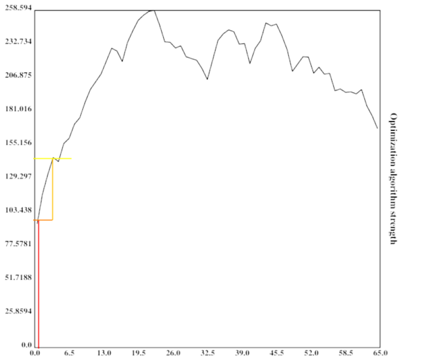

author: niplav, created: 2020-07-22, modified: 2020-08-04, language: english, status: draft, importance: 7, confidence: unlikely
In AI safety, significant time has been spent on the question of the intelligence of AI systems over time, especially during takeoff. An underappreciated argument in the debate has been the idea that the more intelligent an AI system becomes, the better it can search the space of possible optimization algorithms. This post proposes a computational model of this process by creating an n-dimensional search space and then running a very simple hill-climbing algorithm and brute-force search on that space. Possible further improvements to the model are suggested, and implications are discussed.
Libre de la metáfora y del mito
labra un arduo cristal: el infinito
mapa de Aquel que es todas Sus estrellas.
– Jorge Luis Borges, “Spinoza”, 1964
Paraphrasing Roache (2008) the state of play is such that nobody believes the result of a simulation, except the person who performed the simulation, and everybody believes the result of an experiment, except the person who ran the experiment.
– Ryan G. McClarren, “Uncertainty Quantification and Predictive Computational Science“ p. 9, 2018
(Although the quote apparently goes back to Einstein, see “The advancement of science, and its burdens” p. 13, only there with "theory" instead of "simulation").
And let me just make an aside. There’s a lot of meta-debate that goes on in the AI safety community which I don’t understand why: it’s not as if we haven’t got enough real work to do. So now we have meta-debates about whether you should focus on short-term or long-term, or whether we should try to reduce the conflict between the short-termers and the long-termers and it’s like, there doesn’t need to be a conflict.
– Stuart J. Russell, “The flaws that make today’s AI architecture unsafe and a new approach that could fix it” (Episode 80 of the 80,000 hours podcast, 2020
Many regard the trajectory of future AI development as crucial: when will AGI first be developed? Will the development be slow, moderate, or fast (in economic doublings, or in wallclock time)? Will one AGI system become a singleton, i.e come to dominate the whole world (individual vs. collective takeoff)? Will AGIs FOOM, i.e growing unexpectedly fast? And: will there be one or more discontinuity when AI systems recursively self-improve? This text attempts to shine light on the last question and highlight a (supposedly underappreciated) argument for one or more discontinuities in AI takeoff based on a computational model of an AI searching the space of possible optimization algorithms for stronger ones.
In the model, there are three possible ways of an AI improving its intelligence:
The argument presented has the following premises:
If these premises are accepted, it is possible for some search spaces to construct an algorithm that attempts to find the best algorithm according to its optimization power:
This can be visualized quite nicely when one imagines the search space to be one-dimensional with arbitrary values (or perhaps its Gödel number)on both axes (which is of course not the case in reality):
At the first step in the optimization process, the algorithm is very weak and can only search a small portion of the space.

At the second step in the optimization process, the algorithm is slightly better than before and already defeating a local maximum.

The algorithm is now much stronger, and exploring a sizeable fraction of the search space.

It has now practically found the global maximum.
The height of the vertical bar indicates the optimization power of the current optimization process, while the width of the vertical bar indicates the portion of the space searched by the current algorithm. For simplicity, the current algorithm searches in its own vincinity, which also might be a good heuristic (since similar algorithms might have similar properties). The width of the horizontal bar increases as the current optimization algorithm becomes stronger and stronger, which leads to bigger subspaces being searched and in turn better algorithms being found.
However, a conceptual argument is not sufficient here. It would be advantageous to test whether a similarly explosive effect occurs in higher-dimensional spaces with different characteristics.